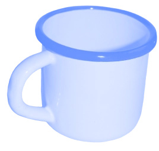
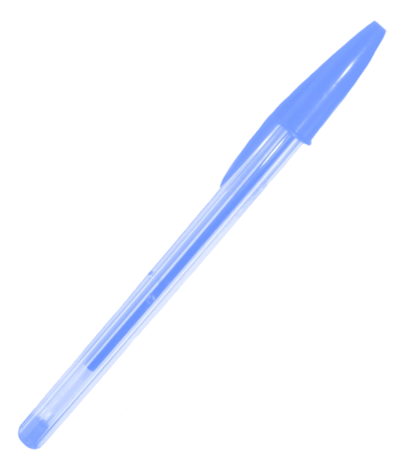

carmen gimeno
diseño gráfico & diseño web



Creo en el diseño gráfico como una herramienta para comunicar, que permite dar sentido y forma a las ideas. Mi forma de trabajar se inspira en la artesanía: cada proyecto requiere tiempo, dedicación y cuidado. Valoro el proceso tanto como el resultado, tratando cada encargo con respeto, sensibilidad y pasión. Diseñar no consiste solo en crear algo nuevo, sino en descubrir el potencial de lo que ya existe y transformarlo en una solución auténtica, funcional y con personalidad.
Un buen diseño asegura una buena comunicación
Afronto cada proyecto de forma personalizada, escuchando tus necesidades y manteniendo una comunicación directa para encontrar la mejor solución. Mi experiencia en distintas áreas del diseño me permite ofrecer un servicio integral, capaz de adaptarse a una amplia variedad de necesidades, desde la creación de identidad visual hasta el diseño de piezas gráficas, digitales o editoriales, siempre con un enfoque creativo y funcional.